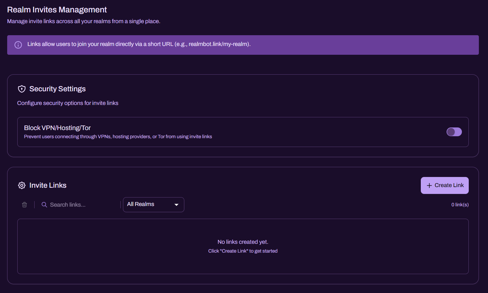
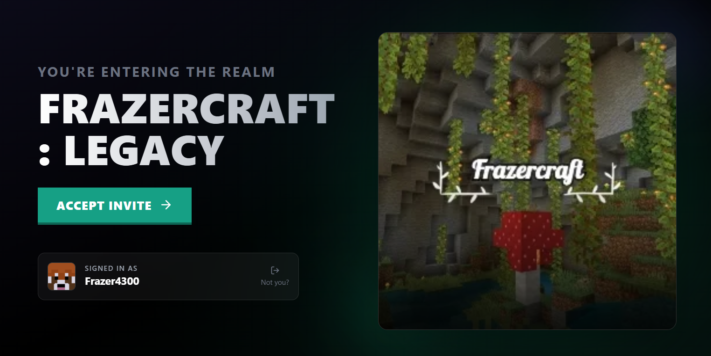
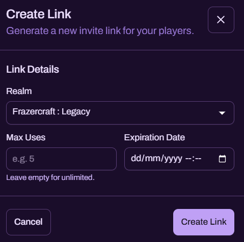
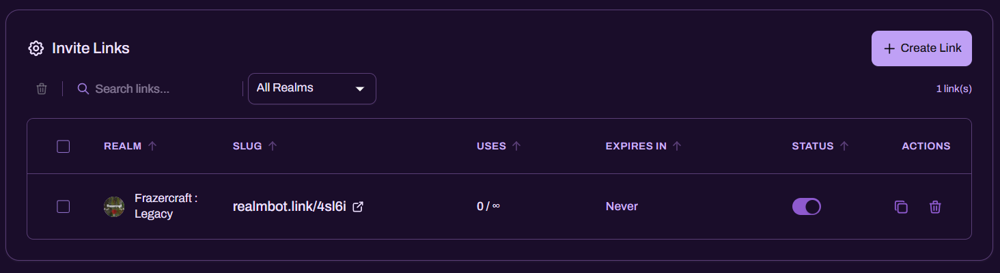

Invite Links

Invite Links allow you to generate short, shareable URLs (for example, realmbot.link/my-realm) that invite players to a selected Minecraft Bedrock Realm associated with your Discord server. This system is designed to provide a safer alternative to distributing official Realm invite codes publicly, reducing repeated abuse from malicious bot accounts.
Platform Note: Invite Links are intended for Minecraft Bedrock Realms.

What Invite Links Are For
Invite Links help Realm Owners:
- Share a Realm invite through a controlled join flow rather than exposing a raw Realm code
- Enforce basic security checks (such as VPN/Hosting/Tor blocking, where enabled)
- Limit exposure using max uses and expiry dates
- Disable or rotate links quickly if a link is leaked or targeted
This feature is particularly valuable for public communities that regularly advertise their Realm and are more likely to be targeted by disruptive join attempts.
How Joining Works (Player Experience)
When a user opens an Invite Link in their browser, they are brought to a dedicated invite page for the Realm.

To accept the invite, the user will be asked to securely sign in with their Microsoft account. After acceptance:
- the Realm invite is applied to their Microsoft account
- the Realm appears in their Minecraft Realms list in-game
- they can join the Realm normally through Minecraft
Security Clarification: Users authenticate through Microsoft’s standard login flow. Players should only sign in on pages they trust and should verify the domain before proceeding.
Security Settings
Invite Links include security options intended to mitigate common abuse patterns.
Block VPN/Hosting/Tor
When enabled, players attempting to use invite links through VPNs, hosting providers, or Tor can be blocked from completing the invite flow.
This is recommended for:
- public invite advertising
- Realms that are frequently targeted by ban evasion
- communities seeing repeated “throwaway account” join behaviour
Creating a New Invite Link
Use the Create Link button to generate a new invite link.

Link Details
When creating a link, you can configure:
-
Realm
Select which connected Realm the invite should apply to. -
Max Uses (optional)
Limit how many successful joins the link can be used for.
Leave empty for unlimited. -
Expiration Date (optional)
Set a date/time when the link stops working automatically.
Leave empty for no expiry.
Operational recommendations:
- Use Max Uses for short-term promotions, events, or controlled onboarding.
- Use an Expiry Date for public adverts so links naturally rotate over time.
- Create separate links for different campaigns (TikTok, Discord, partner servers) so you can disable one source without disrupting others.
Managing Existing Links
Once created, links appear in the Invite Links table.

Each entry typically shows:
- Realm - which Realm the link targets
- Slug / URL - the short link players will open
- Uses - current uses vs limit (or unlimited)
- Expires In - time until expiry (or “Never”)
- Status - toggle to enable/disable the link quickly
- Actions - common actions include copying the link and deleting it
Recommended Workflow
- If a link is being abused, disable it immediately using the Status toggle.
- If you want to retire a link permanently, delete it and create a replacement.
- Keep older links disabled rather than deleted if you want a record of what was shared and where.
Best Practices
- Treat Invite Links as public entry points. Share only what you need, where you need it.
- Prefer short expiry for publicly posted links, then rotate regularly.
- Enable VPN/Hosting/Tor blocking if you operate a public-code Realm or experience repeated abuse.
- Use different links for different platforms so you can identify the source of activity spikes.
- Keep at least one “staff-only” link that is never publicly shared for trusted onboarding.
Troubleshooting
The link opens, but the player cannot accept the invite
- Confirm the link is enabled.
- Check whether the link has expired or reached max uses.
- If VPN blocking is enabled, ensure the player is not using a VPN/Proxy/Tor.
The player accepted, but the Realm does not appear in Minecraft
- Ask the player to confirm they signed into the correct Microsoft account.
- Have them restart Minecraft and refresh their Realms list.
- If they accepted on a different Microsoft account, they must repeat the process with the intended account.
A link is being targeted
- Disable the link immediately via the Status toggle.
- Create a new link with a tighter Max Uses and an Expiry Date.
- Consider enabling VPN/Hosting/Tor blocking if not already enabled.